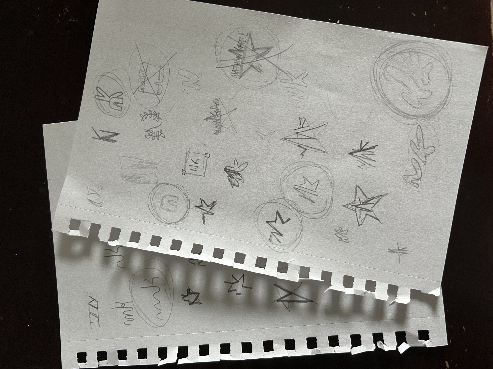
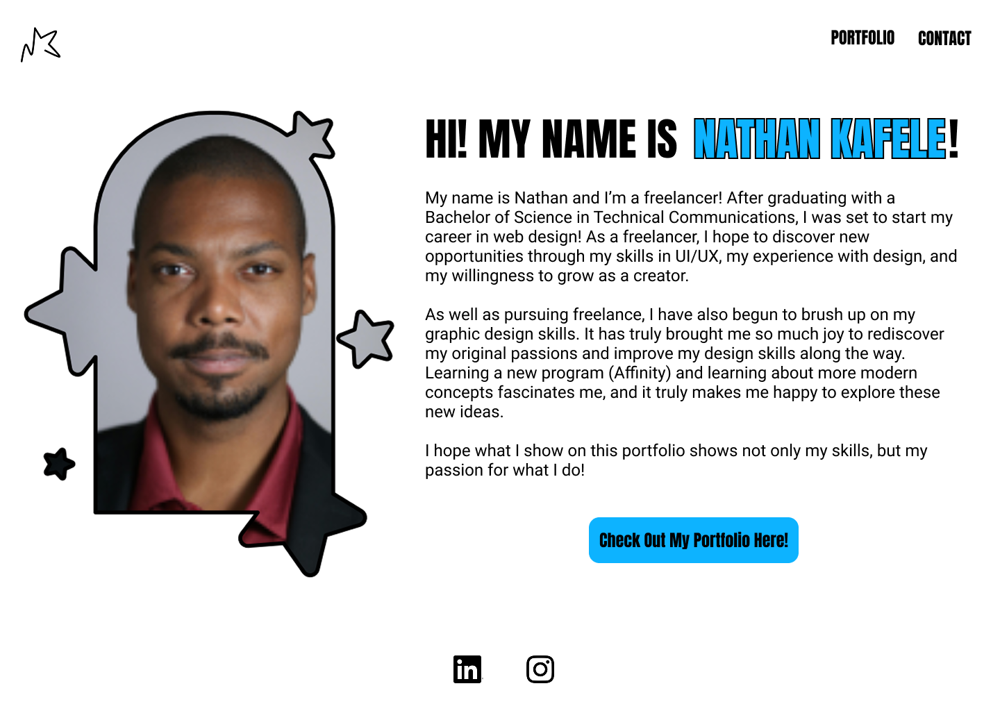
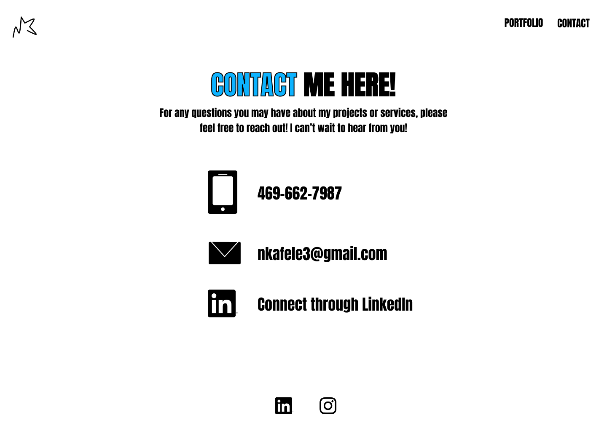
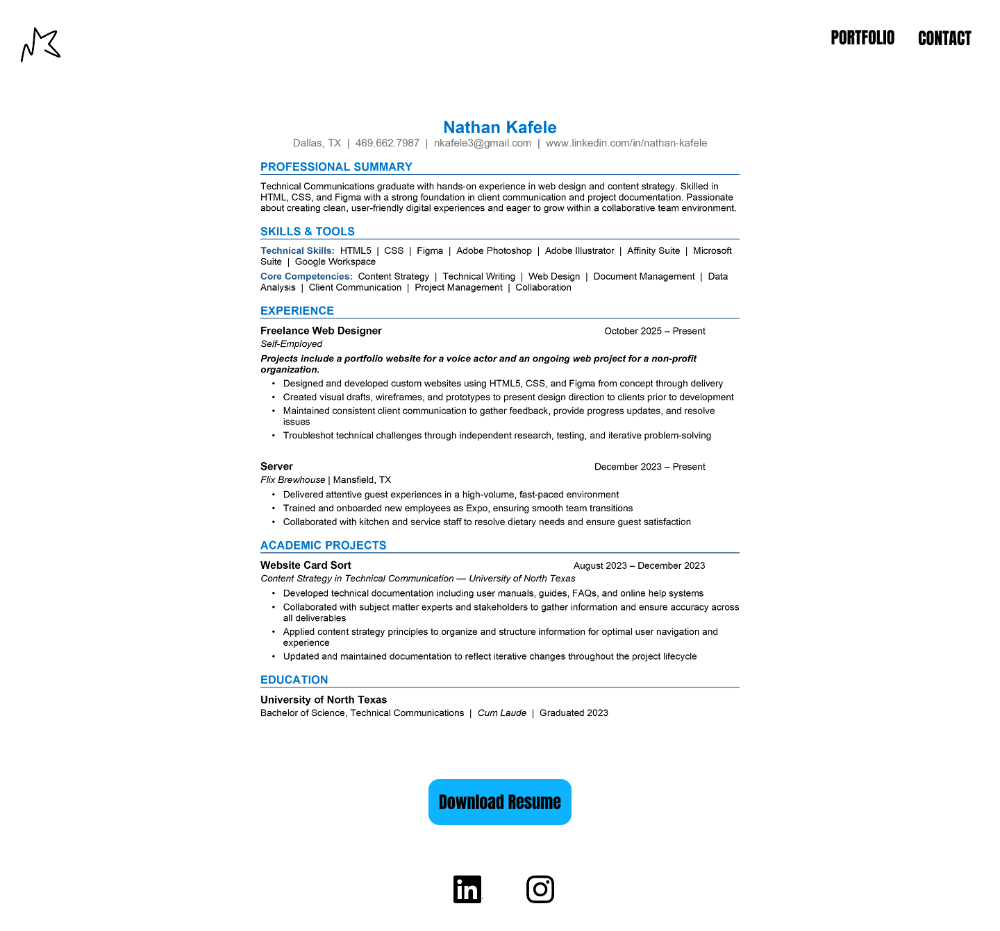

PLANNING
When I redesigned my site, I wanted to really practice with a different method of drafting. I started reading more books about improving one’s design process and wanted to experiment with methods such as thumbnailing. Before, I would just go straight to Figma, but this time I wanted to get several drafts done quickly.
For myself, I wanted to make the portfolio feel more “me” and wanted to incorporate things that bring me joy. So, my objectives were to:
- Make the website feel more graphic and modern!
- Incorporate stars throughout the website.
- Include my own logo for self-branding!
For sketching, I specifically wanted to focus on the homepage, as it would dictate the feel of the rest of the site. By introducing concepts on the homepage, I could envision what the entire site would look like. In early sketching, I wanted a basic, clean page that served as a familiar introduction, with an image on one side and text on the other. Later I would draft more image focused sketches that would be more of a book cover rather than an interactive page. Because of that I chose to go with a simple layout that had an interesting image rather than a filler page.
LOGO DESIGN
For the logo, I wanted to make it as it reminded me of a branding project I did back in high school. We were tasked to come up with a personal logo that represented us and my final product was something that seemed ill-fitting to me now. As I have gotten older, I wanted to revisit these designs and update them to reflect on my growth as a person.

In the original designs, I was mainly focused on branding myself on my interests. At the time, I was focused on portraying imagery such as paint brushes, pencils, and pixels as I was very fond of art and video games. I wanted to re-focus on things that reflected my style and what I visually connected to. With that in mind, I wanted a logo that:
- Make the website feel more graphic and modern!
- Incorporate stars throughout the website.
- Include my own logo for self-branding!
When sketching out my designs, I mainly focused on randomly jotting down ideas to just throw things out there and then start to refine the ideas I liked. Some of the designs, I found myself going back to old habits. I drew up images of a fern (which I had recently purchased), one that resembled a website interface (as I am a freelancer), and one that looked like a select tool over my initials. It was all part of the process, and after getting a few more on the page, I circled the designs I liked and put them into Affinity.
The design I settled on was the one you see now. In many of the drafts, I included stars because they have a sentimental value. My late aunt expressed that we turn into “epic stardust” when we pass, and that is what she is now. Ever since, stars have unconsciously become a part of my life. They are in my clothes, in my jewelry, and even on the receipts I give at work. I wanted the stars on my site in some way, so still going with the initials of my name, I made the star the “K” in Kafele. I still wanted to keep it rounded and not so sharp to give a sense of playfulness. I liked the idea of having it stay as one stroke to give the impression of an autograph to “sign my work”.
I really enjoyed making the logo, and after that was said and done, the process of wireframing my website could begin.
WIREFRAMING






This would be my most ambitious project as I wanted to challenge myself with learning different tricks that I could display on my website. I knew that something I wanted to add were more interesting interactions. Like previews of what is on the next page. In the initial design, I had carried the star motif throughout every page but thought that added a lot of unnecessary clutter.
Finalizing a design that I was happy with took longer than expected, but I had to take a step back and pick which elements would make it into the final design. Knowing when to stop designing is something I struggled with, especially with a project that represents me and my work. After choosing the final design, I needed to move on with the process and start coding the final product.
CODING
I felt a lot more comfortable coding this website than I have with the others. This felt like a chance to show off what I had learned from my other websites and implement them into this labor of love. I am happy with the final product and know that there is room for improvement. However, I think it is the perfect capstone of my progress as a designer and hope to come back one day and reflect on the choices I have made and improve them. I hope you enjoy the site as much as I do!